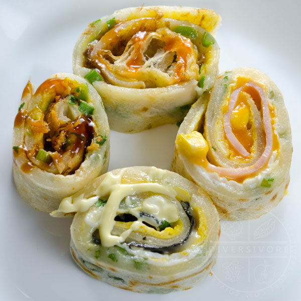

Dan Bing (蛋餅) - Taiwanese Egg Crepes Recipe

Ingredients
- 3/4 cup all-purpose flour ((see note))
- 1/4 cup tapioca starch ((or sweet potato starch - see note))
- 1/8 tsp salt
- 1.25 cups water
- 1 bunch scallion greens (chopped (see note))
- 1 large egg
- 4 large eggs
- 1 tsp sesame oil (divided (1/4 tsp per egg))
- 1/8 tsp salt (divided (~pinch per egg))
- various fillings ((see notes for options))
- Taiwanese soy paste
- sweet chili sauce
- Japanese mayo
Instructions
Batter
- Whisk the water and starch together thoroughly in a medium bowl.
- Add an egg to the water and starch mixture, and whisk thoroughly again.
- Put the flour and salt into a large bowl or mixer. Add the liquid ingredients and whisk everything until a thin,
uniform batter has been formed. Add the scallions and mix (or add them to the eggs in the next step, if you prefer).
Set the batter aside while you prepare the eggs and any fillings.
Eggs
- Crack an egg into a bowl, then add 1/4 tsp of sesame oil and a pinch of salt. Mix together. Set aside and proceed to
the cooking steps.
To Cook
- Pour a portion of the batter into the hot pan (~1/4 of the batter for larger servings, or 1/6th for smaller servings).
Tilt the pan from side to side in order to spread the batter into a thin circle. Cook until the pancake is mostly set,
but still a little soft on top.
- Pour the whisked egg mixture onto the top of the pancake. Spread the egg out as evenly as you can, and continue to cook
until the egg is set enough to flip without making a mess.
- (Optional - skip this step for a softer egg)
Flip the pancake and cook the egg side for 5-10 seconds, then flip so the batter side is down once again.
- Add any additional fillings (see notes for options and variations). Cook for an additional minute or so (depending on
the add-ins), then remove the dan bing from pan and roll it up.
- Repeat the cooking steps for all remaining batter and eggs.
To Serve
- Drizzle any sauces over the finished dan bing, or serve these in separate small dishes for dipping. Slice (if desired) and serve.
For a portable option, consider adding the sauce to the inside of the dan bing during the cooking stage, then roll everything up and take it to go, burrito-style.
Credit: Diversivore
Back to Top | Back to Home page